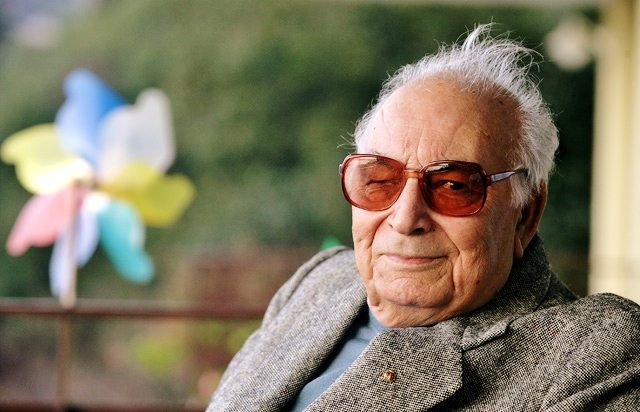

Yaşar Kemal Vakfı hazırladığı 2024 takvimini online olarak erişime açtı
Gazete Duvar’ın haberine göre Yaşar Kemal Vakfı 2024 yılına Yaşar Kemal’den tadımlık alıntıların yer aldığı çevrimiçi bir takvimle okuyucuyla buluştu. Çevrimiçi ulaşılabilen ve ‘Her güne bir alıntı-bir fotoğraf’tan oluşan 2024 takviminin teması “Gazeteci Yaşar Kemal”.
Yaşar Kemal’in gazetecilik yıllarından ve röportaj kitaplarından tadımlık alıntılara yine Yaşar Kemal fotoğrafları eşlik ediyor.
2021 yılından bu yana yasarkemalvakfi.org sitesinde çevrimiçi yayınlanan Yaşar Kemal takvimi yer yıl farklı bir temadan oluşuyor. 2021 yılında “Edebiyatın Gücü”, 2022 yılında “Doğa” ve 2023 yılında “Demokrasi, barış, gençlik ve eğitim” temaları alıntı konuları olarak seçildi.